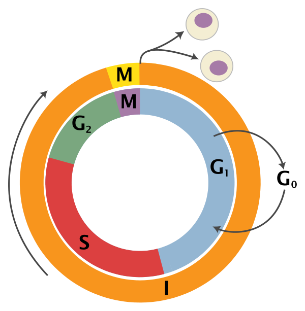
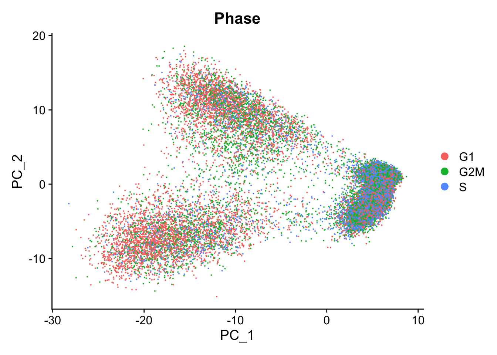

library(RCurl)
library(AnnotationHub)
library(ensembldb)Cell Cycle Scoring
Cell cycle scoring
Cell cycle variation is a common source of uninteresting variation in single-cell RNA-seq data. To examine cell cycle variation in our data, we assign each cell a score, based on its expression of G2/M and S phase markers.
An overview of the cell cycle phases is given in the image below:

Adapted from Wikipedia (Image License is CC BY-SA 3.0)
- G0: Quiescence or resting phase. The cell is not actively dividing, which is common for cells that are fully differentiated. Some types of cells enter G0 for long periods of time (many neuronal cells), while other cell types never enter G0 by continuously dividing (epithelial cells).
- G1: Gap 1 phase represents the beginning of interphase. During G1 there is growth of the non-chromosomal components of the cells. From this phase, the cell may enter G0 or S phase.
- S: Synthesis phase for the replication of the chromosomes (also part of interphase).
- G2: Gap 2 phase represents the end of interphase, prior to entering the mitotic phase. During this phase th cell grows in preparation for mitosis and the spindle forms.
- M: M phase is the nuclear division of the cell (consisting of prophase, metaphase, anaphase and telophase).
The Cell-Cycle Scoring and Regression tutorial from Seurat makes available a list of cell cycle phase marker genes for humans and performs phase scoring based on the paper from Tirosh, I. et al.. We have used this list to perform orthology searches to create compiled cell cycle gene lists for other organisms, as well.
After scoring each gene for cell cycle phase, we can perform PCA using the expression of cell cycle genes. If the cells group by cell cycle in the PCA, then we would want to regress out cell cycle variation, unless cells are differentiating.
Note
If cells are known to be differentiating and there is clear clustering differences between G2M and S phases, then you may want to regress out by the difference between the G2M and S phase scores as described in the Seurat tutorial, thereby still differentiating the cycling from the non-cycling cells.
The code in this lesson relies on these libraries:
# Download cell cycle genes for organism at https://github.com/hbc/tinyatlas/tree/master/cell_cycle. Read it in with:
cc_file <- getURL("https://raw.githubusercontent.com/hbc/tinyatlas/master/cell_cycle/Homo_sapiens.csv")
cell_cycle_genes <- read.csv(text = cc_file)
head(cell_cycle_genes) phase geneID modified
1 G2/M ENSG00000010292 9/13/17
2 G2/M ENSG00000011426 9/13/17
3 G2/M ENSG00000013810 9/13/17
4 G2/M ENSG00000072571 9/13/17
5 G2/M ENSG00000075218 9/13/17
6 G2/M ENSG00000080986 9/13/17All of the cell cycle genes are Ensembl IDs, but our gene IDs are the gene names. To score the genes in our count matrix for cell cycle, we need to obtain the gene names for the cell cycle genes.
We can use annotation databases to acquire these IDs. While there are many different options, including BioMart, AnnotationDBI, and AnnotationHub. We will use the AnnotationHub R package to query Ensembl using the ensembldb R package.
# Connect to AnnotationHub
ah <- AnnotationHub()
# Access the Ensembl database for organism
ahDb <- query(ah,
pattern = c("Homo sapiens", "EnsDb"),
ignore.case = TRUE)
# Acquire the latest annotation files
id <- ahDb %>%
mcols() %>%
rownames() %>%
tail(n = 1)
# Download the appropriate Ensembldb database
edb <- ah[[id]]
# Extract gene-level information from database
annotations <- genes(edb,
return.type = "data.frame")
# Select annotations of interest
annotations <- annotations %>%
dplyr::select(gene_id, gene_name,
seq_name, gene_biotype,
description)
head(annotations) gene_id gene_name seq_name gene_biotype
1 ENSG00000290825 DDX11L2 1 lncRNA
6 ENSG00000223972 DDX11L1 1 transcribed_unprocessed_pseudogene
7 ENSG00000227232 WASH7P 1 unprocessed_pseudogene
8 ENSG00000278267 MIR6859-1 1 miRNA
9 ENSG00000243485 MIR1302-2HG 1 lncRNA
10 ENSG00000284332 MIR1302-2 1 miRNA
description
1 DEAD/H-box helicase 11 like 2 (pseudogene) [Source:NCBI gene (formerly Entrezgene);Acc:84771]
6 DEAD/H-box helicase 11 like 1 (pseudogene) [Source:HGNC Symbol;Acc:HGNC:37102]
7 WASP family homolog 7, pseudogene [Source:HGNC Symbol;Acc:HGNC:38034]
8 microRNA 6859-1 [Source:HGNC Symbol;Acc:HGNC:50039]
9 MIR1302-2 host gene [Source:HGNC Symbol;Acc:HGNC:52482]
10 microRNA 1302-2 [Source:HGNC Symbol;Acc:HGNC:35294]Now we can use these annotations to get the corresponding gene names for the Ensembl IDs of the cell cycle genes.
# Get gene names for Ensembl IDs for each gene
cell_cycle_markers <- dplyr::left_join(cell_cycle_genes,
annotations,
by = c("geneID" = "gene_id"))
# Acquire the S phase genes
s_genes <- cell_cycle_markers %>%
dplyr::filter(phase == "S") %>%
pull("gene_name")
# Acquire the G2M phase genes
g2m_genes <- cell_cycle_markers %>%
dplyr::filter(phase == "G2/M") %>%
pull("gene_name")
s_genes [1] "UBR7" "RFC2" "RAD51" "MCM2" "TIPIN" "MCM6"
[7] "UNG" "POLD3" "WDR76" "CLSPN" "CDC45" "CDC6"
[13] "MSH2" "MCM5" "POLA1" "MCM4" "RAD51AP1" "GMNN"
[19] "RPA2" "CASP8AP2" "HELLS" "E2F8" "GINS2" "PCNA"
[25] "NASP" "BRIP1" "DSCC1" "DTL" "CDCA7" "CENPU"
[31] "ATAD2" "CHAF1B" "USP1" "SLBP" "RRM1" "FEN1"
[37] "RRM2" "EXO1" "CCNE2" "TYMS" "BLM" "PRIM1"
[43] "UHRF1" g2m_genes [1] "NCAPD2" "ANLN" "TACC3" "HMMR" "GTSE1" "NDC80" "AURKA"
[8] "TPX2" "BIRC5" "G2E3" "CBX5" "RANGAP1" "CTCF" "CDCA3"
[15] "TTK" "SMC4" "ECT2" "CENPA" "CDC20" "NEK2" "CENPF"
[22] "TMPO" "HJURP" "CKS2" "DLGAP5" "PIMREG" "TOP2A" "PSRC1"
[29] "CDCA8" "CKAP2" "NUSAP1" "KIF23" "KIF11" "KIF20B" "CENPE"
[36] "GAS2L3" "KIF2C" "NUF2" "ANP32E" "LBR" "MKI67" "CCNB2"
[43] "CDC25C" "HMGB2" "CKAP2L" "BUB1" "CDK1" "CKS1B" "UBE2C"
[50] "CKAP5" "AURKB" "CDCA2" "TUBB4B" "JPT1" Taking the gene names for the cell cycle genes we can score each cell based which stage of the cell cycle it is most likely to be in.
# Perform cell cycle scoring
seurat_phase <- CellCycleScoring(seurat_phase,
g2m.features = g2m_genes,
s.features = s_genes)
seurat_phaseAn object of class Seurat
14065 features across 29629 samples within 1 assay
Active assay: RNA (14065 features, 0 variable features)
2 layers present: counts, dataBy default, the PCA is run only using the most variable features. If identified previously, there is no need to run FindVariableFeatures() again. The output of the PCA returns the correlated gene sets associated with the different principal components (PCs).
# Identify the most variable genes if it hasn't been run
seurat_phase <- FindVariableFeatures(seurat_phase,
selection.method = "vst",
nfeatures = 2000,
verbose = FALSE)
# Scale the counts
seurat_phase <- ScaleData(seurat_phase)
# Perform PCA and color by cell cycle phase
seurat_phase <- RunPCA(seurat_phase)
# Visualize the PCA, grouping by cell cycle phase
DimPlot(seurat_phase,
reduction = "pca",
group.by= "Phase")
We do see differences on PC1, with the G1 cells to the left of the other cells on PC1. Based on this plot, we would regress out the variation due to cell cycle.
Note
Alternatively, we could wait and perform the clustering without regression and see if we have clusters separated by cell cycle phase. If we do, then we could come back and perform the regression.